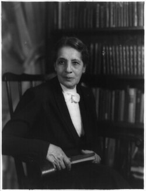

La fisica che ha scoperto la fissione nucleare

:contentReference[oaicite:0]{index=0} è stata una fisica austriaca fondamentale per la scoperta della fissione nucleare.
Gli scienziati cercavano di capire come fosse fatto il nucleo atomico e perché restasse stabile nonostante la repulsione tra protoni.
Un neutrone colpisce il nucleo di uranio → il nucleo si deforma → si divide in due nuclei più piccoli. Questo processo è la fissione nucleare.
Durante la fissione, una piccola parte della massa si trasforma in energia secondo la formula:
E = mc²
La fissione libera neutroni che colpiscono altri nuclei → creando una reazione a catena. Può essere controllata (centrali) o incontrollata (bombe).
I nuclei più piccoli sono più stabili e quindi rilasciano energia quando si formano.
La scoperta ha portato all’energia nucleare ma anche alle armi atomiche. Meitner si oppose all’uso militare della sua scoperta.
Nonostante il suo ruolo fondamentale, il Nobel fu assegnato solo a Otto Hahn.
:contentReference[oaicite:1]{index=1} ha dimostrato che la materia può trasformarsi in energia e ha aperto una nuova era della fisica nucleare.